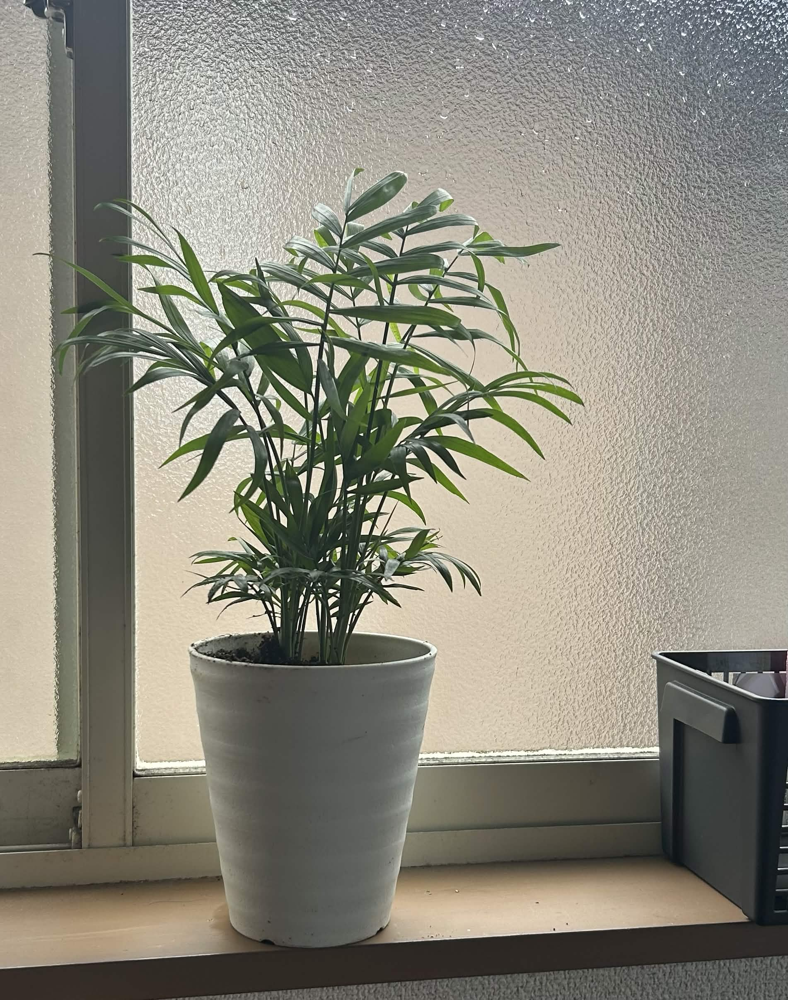
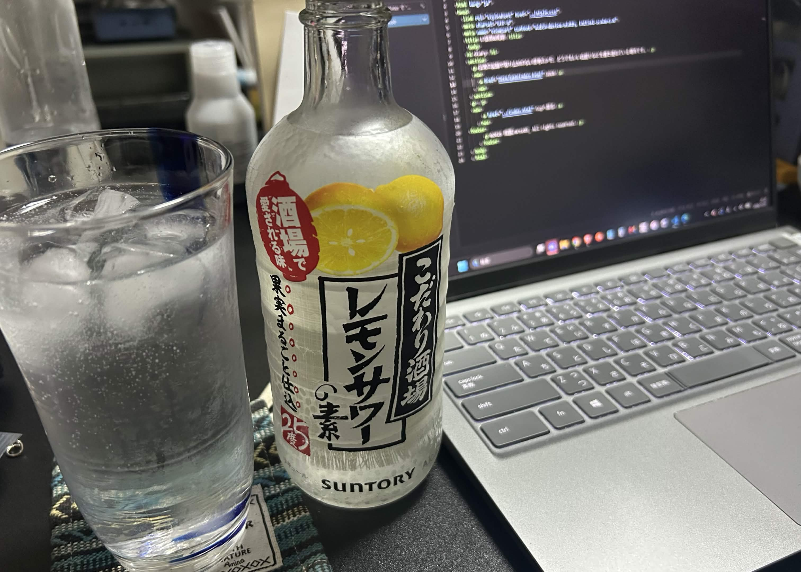

2026 11/02 (Mo)
ひ～楽しかった。昨日打ち上げ終わって帰ってから書くつもりだったけど普通に疲れて寝てしまったので昨日書きたかったあれこれを書き残していこうと思う。
農学祭でテーブルヤシを買った。記録として今日の状態の写真を残しておく。

一昨年の文化祭ではカシミヤバイオレットを買ったのだけど1年程で枯らしてしまった(内部から腐れているようだったので水をやりすぎたのかもしれない？)。そのことをかなり申し訳なく思っているので今度こそ大切に育てようと思う。あとはさつまいもを買ったのであとでスイートポテトを作ってみようと思う。
自分のグッズが売れていくのが嬉しくて基本的にずっと店番をやっていたので今年はあまり他のところを見て回れなかった。元素擬人化という概念に馴染みのないお客さんが大半なのでへ～何だろ？みたいな感じで興味を持ってくれたり、元素に関して話しているのを遠目から見てニヤけが止まらなかった(キモい)。正直そんな売れんだろうと思っていたのだけれど、アクキーもステッカーも想定よりかなり多くの人の手に渡ったようで、絵柄好きです！って声を掛けてくれるお客さんもいて本当に嬉しかった。同人活動の喜びに脳を焼かれそうだ......
終わってからカレー屋さんへ打ち上げに行って、帰ってhtmlぶっ叩きながら晩酌をキメて、余韻と程よい酩酊でありえないほどの多福感に包まれながらドカ寝して起きたのが今日だ。昨日のお知らせは酔いながら書いたものだが、起きて読んだら普通に文章がおかしかったので修正しておいた。

順当に行けば再来年の春にはここを去ることになるが、この大学での今の生活が愛おしくてなんか名残惜しくなってしまう。順当に行けばの話ではあるけど！正直来年以降どうなっているかはよく分からない。
ともかく無事に文化祭を終えられてよかった。次はモルマか～～～同人誌の執筆やらなんやらでまた忙しくなるなあ。